Dinâmica de um metrónomo básico
Cadeira: Modelação e Simulação 2º Semestre 2019/2020
Trabalho de Laboratório nº 3
Alunos: Daniel Leitão 90042 - João Almeida 90119
Grupo: 2
Turno: Quarta-Feira 8:30-10:30
Docente: Alexandre Bernardino
Contents
- Introdução
- Clear workspace and close all figures
- SIMULINK
- Pergunta 5 - Simulação das equações de estado, sem recorrer ao bloco de espaço de estados.
- Pergunta 6 - Simulação das equações de estado, recorrendo ao bloco de espaço de estados.
- Pergunta 7 - Simulação do sistema com valores de atrito específicos. Análise do espaço de estados.
- Pergunta 8 - Trajectórias rectilíneas no plano de fase.
- Pergunta 9 - Cálculo de comprimentos para uma dada cadência.
- Pergunta 10 - Sistema não linear e correção do comprimento.
- Pergunta 11 - Introdução de impulsos para contrariar o decaimento natural para zero.
- Pergunta 12 - Curvas de resposta em frequência
- Pergunta 13 - Medição de uma massa a partir da sua posição e dada uma entrada sinusoidal no sistema.
- Anexos
Introdução
Neste trabalho procura-se modelar a dinâmica de um metrónomo colocando especial ênfase na análise em espaço de estados. Adicionalmente procura-se implementar melhorias no metrónomo e estudar mais concretamente a associação entre diferentes configurações do instrumento e o output pretendido.
Clear workspace and close all figures
clear; close all;
clc;
s = set_system5();
SIMULINK
O modelo em Simulink elaborado é o exposto abaixo. Por uma questão de redução no número de ficheiros de simulação empregues no projecto optou-se por sintetizar todos os diagramas num único ficheiro. Para tal recorre-se a mais blocos cuja finalidade é somente decidir sob qual dos ramos é suposto atentar num dado momento.
metron;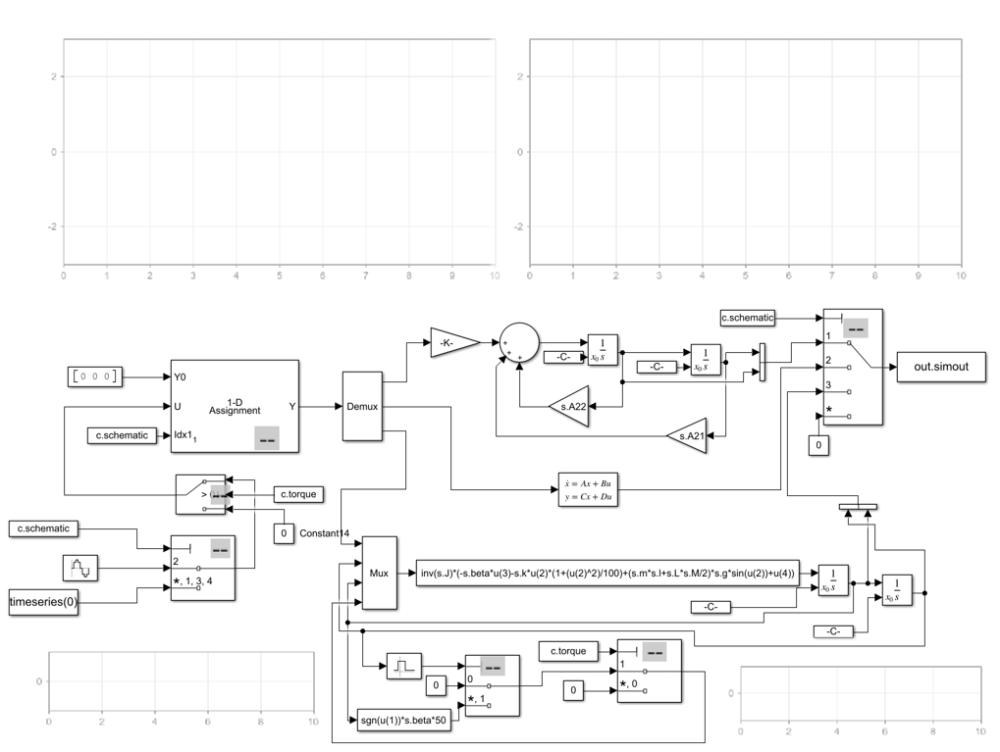
Pergunta 5 - Simulação das equações de estado, sem recorrer ao bloco de espaço de estados.
Nesta alínea faz-se a simulação das equações de estado obtidas na alínea 2 (teórica). O diagrama correspondente no Simulink usa apenas blocos elementares. Considera-se também a ausência de binário externo. O código abaixo faz escolha do ramo cujo output é lido através de set_controller(). Depois de efectuada a simulação procede-se a fazer o plot da resposta ao longo do tempo e das variáveis de estado no plano de estados através das funções plotYY() e plotSS(). Estas funções são repetidamente invocadas ao longo de todo o trabalho.
c = set_controller(1); % set c.schematic = 1 - multiple blocks sig.y=sim('metron','StopTime', '5'); plotYY(sig.y,'Response to Initial Condition - multiple blocks'); plotSS(sig.y,'State Space to Initial Condition - multiple blocks');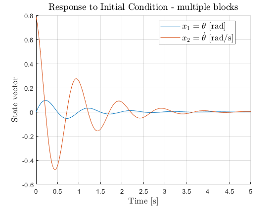 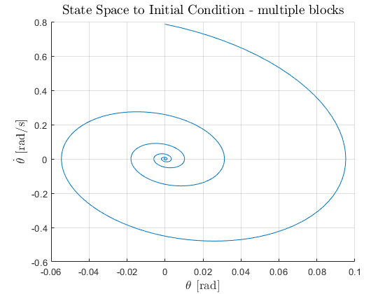
Como seria de esperar, é possível observar que as variáveis de estado tendem para zero. É a existência de atrito (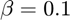) que possibilita esta convergência, dado que é responsável por fazer dissipar a energia do pêndulo ao longo do tempo.
Pergunta 6 - Simulação das equações de estado, recorrendo ao bloco de espaço de estados.
Nesta alínea procede-se à mesma simulação que na questão anterior, mas desta vez recorrendo a um diagrama que inclua um bloco com o modelo de estado pré-definido. O código é semelhante à alínea anterior, mas desta vez a função set_controller() define que o output é extraído do ramo que contém o bloco de espaço de estados no Simulink.
c = set_controller(); % set c.schematic = 2 - SS block sig.y=sim('metron','StopTime', '5'); plotYY(sig.y,'Response to Initial Condition - State-Space block'); plotSS(sig.y,'State Space - State-Space block');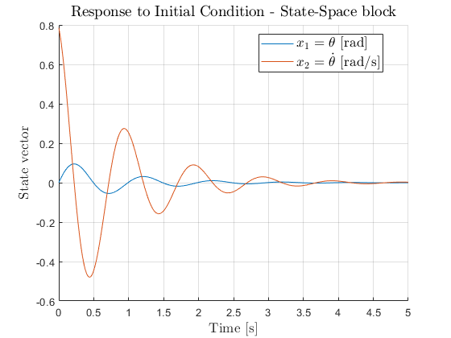 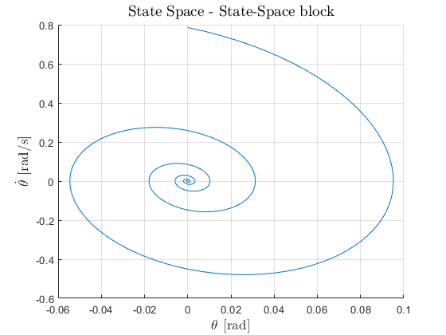
É evidente que os resultados são iguais à alínea anterior, dado que são produzidos por diagramas equivalentes, sendo que este em questão é preferível por ocupar um espaço mais reduzido e apelar bastante a um tratamento em espaço de estados como foi feito em alíneas anteriores. A escolha da matriz C é especial, pois apesar da variável de saída pretendida em teoria ser 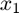 (ou seja, 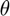), na prática é nos útil reter também 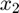 à saída para efeitos de representação no tempo e no espaço de estados. Opta-se então por 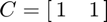.
Pergunta 7 - Simulação do sistema com valores de atrito específicos. Análise do espaço de estados.
Nesta questão pretende-se simular o sistema escolhendo valores distintos para 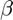 em cada ocasião. Em detalhe, pretende-se simular o sistema na ausência de atrito (atendendo à alínea 5 será de esperar que o sistema não convirja para zero...) e com 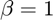. Recorre-se também à função quiver para ser mais facilmente observável a evolução do sistema num dado ponto do plano de estado. Obteve-se a resposta no tempo e em espaço de estados com o código seguinte que é idêntico aos restantes trechos nesta alínea; primeiro establece-se o valor de e de 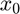 através da função friction(), depois simula-se a reposta do sistema, e finalmente faz-se a representação no plano de estados e a variação ao longo do tempo:
s = friction(0,s); sig.y=sim('metron','StopTime', '5'); plotYY(sig.y,'Response to Initial Condition - $\beta$ = 0 Nm/rad'); plotSS(sig.y,'State Space $\dot{\theta}(\theta)$ - $\beta$ = 0 Nm/rad'); quiverSS(s.sys.A,sig.y); s = friction(1,s); sig.y=sim('metron','StopTime', '5'); plotYY(sig.y,'Response to Initial Condition - $\beta$ = 1 Nm/rad'); plotSS(sig.y,'State Space $\dot{\theta}(\theta)$ - $\beta$ = 1 Nm/rad'); quiverSS(s.sys.A,sig.y);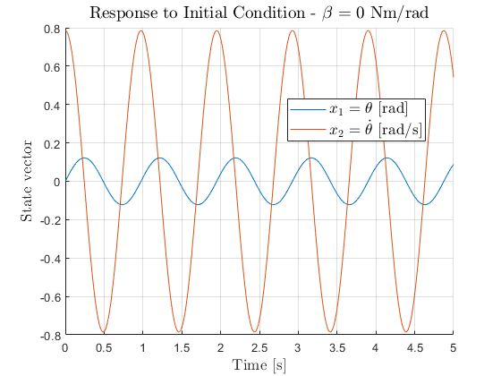 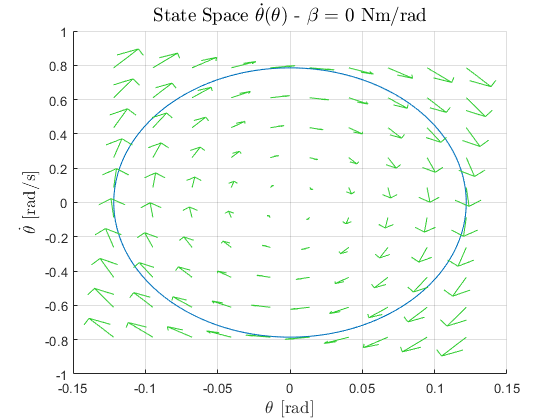 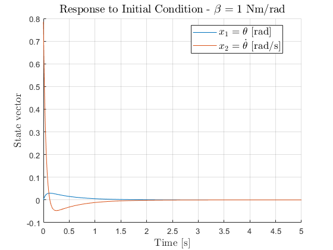 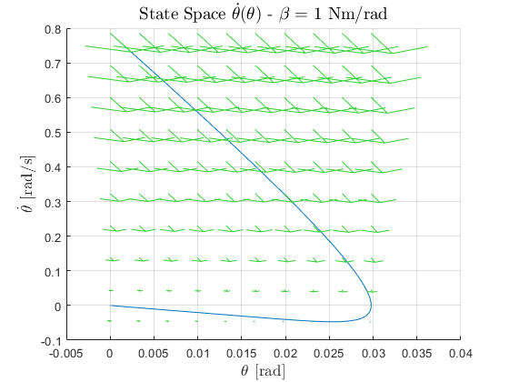
Tal como seria de esperar, na primeira situação em que 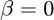, obtemos uma circunferência no plano de estado, o que caracteriza precisamente o comportamento esperado de não convergência para zero (também não explode para infinito contudo). Esta oscilação das variáveis de estado é típica para valores próprios imaginários puros conjugados. A oscilação é claramente vísivel no gráfico que contém a variação ao longo do tempo.
Para , acontece algo diferente. As variáveis tendem para zero num padrão mais rectilíneo no plano de estado (valores próprios reais negativos). Esta convergência é bastante óbvia ao analizar a resposta ao longo do tempo, que tende para zero bastante rapidamente e sem grande oscilação.
Faz-se agora uma análise semelhante no plano de estado com intuito de classificar os padrões já vistos acima, recorrendo a mais condições iniciais.
As condições iniciais de partida listam-se à direita das imagens produzidas.
A única diferença em termos de código com o trecho acima é o cálculo dos valores e vectores próprios através da função eig(). Escolhe-se também manualmente as condições iniciais.
Para :
s = friction(0,s); s.x0 =[0;pi]; l1 = ['$(x_1,x_2)$ =' mat2str(s.x0,3)]; % legend sig.y=sim('metron','StopTime', '5'); f = plotSS(sig.y,'State Space $\dot{\theta}(\theta)$ - $\beta$ = 0 Nm/rad'); s.x0 =[pi/8;-pi]; l2 = ['$(x_1,x_2)$ =' mat2str(s.x0,3)]; % legend sig.y=sim('metron','StopTime', '5'); plotSS(sig.y); s.x0 =[-pi/4;0]; l3 = ['$(x_1,x_2)$ =' mat2str(s.x0,3)]; % legend sig.y=sim('metron','StopTime', '5'); plotSS(sig.y); s.x0 =[-pi/4;pi]; l4 = ['$(x_1,x_2)$ =' mat2str(s.x0,3)]; % legend sig.y=sim('metron','StopTime', '5'); plotSS(sig.y); fLegend({l1 l2 l3 l4},'bestoutside'); quiverSS(s.sys.A, f); [V,D] = eig(s.sys.A, 'vector'); disp("Vectores Próprios (colunas):"); disp(V); disp("Valores Próprios:"); disp(D);
Vectores Próprios (colunas): 0.0000 - 0.1533i 0.0000 + 0.1533i 0.9882 + 0.0000i 0.9882 + 0.0000i Valores Próprios: 0.0000 + 6.4451i 0.0000 - 6.4451i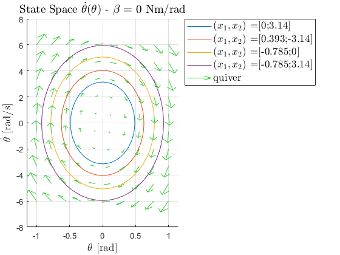
A imagem obtida corresponde a um "centro" em termos de retrato de fase do sistema. Os valores próprios confirmam esta afirmação, por serem imaginários puros conjugados. Qualquer ponto de partida gera uma solução oscilatória que não tende para o ponto de equilíbrio em zero (salvo o próprio zero obviamente). O facto dos vectores próprios serem complexos é também mais um reforço para a existência destas trajectórias curvas.
Atenta-se agora na situação :
s = friction(1,s); s.x0 =[0;pi]; l1 = ['$(x_1,x_2)$ =' mat2str(s.x0,3)]; % legend sig.y=sim('metron','StopTime', '5'); f = plotSS(sig.y,'State Space $\dot{\theta}(\theta)$ - $\beta$ = 1 Nm/rad'); s.x0 =[pi/8;-pi]; l2 = ['$(x_1,x_2)$ =' mat2str(s.x0,3)]; % legend sig.y=sim('metron','StopTime', '5'); plotSS(sig.y); s.x0 =[-pi/4;0]; l3 = ['$(x_1,x_2)$ =' mat2str(s.x0,3)]; % legend sig.y=sim('metron','StopTime', '5'); plotSS(sig.y); s.x0 =[-pi/4;pi]; l4 = ['$(x_1,x_2)$ =' mat2str(s.x0,3)]; % legend sig.y=sim('metron','StopTime', '5'); plotSS(sig.y); fLegend({l1 l2 l3 l4},'bestoutside'); quiverSS(s.sys.A, f); [V,D] = eig(s.sys.A, 'vector'); disp("Vectores Próprios (colunas):"); disp(V); disp("Valores Próprios:"); disp(D);
Vectores Próprios (colunas):
0.4415 -0.0489
-0.8973 0.9988
Valores Próprios:
-2.0323
-20.4396

A imagem obtida corresponde a um "nó estável" em termos de retrato de fase do sistema. É possível comprovar isto através dos valores próprios que são reais e negativos. Qualquer ponto de partida fará com que as variáveis de estado evoluam para zero. As trajectórias rectilíneas, como já foram referidas anteriormente são características deste retrato de fase. Relacionam-se com os vectores próprios pois são estes que dão as direções fundamentais de evolução das variáveis do sistema (as tais rectas observáveis no plano). Na pergunta 8 veremos esta questão em detalhe.
Faz-se agora a mesma análise para :
s = friction(0.1,s); s.x0 =[0;pi]; l1 = ['$(x_1,x_2)$ =' mat2str(s.x0,3)]; % legend sig.y=sim('metron','StopTime', '5'); f = plotSS(sig.y,'State Space $\dot{\theta}(\theta)$ - $\beta$ = 0.1 Nm/rad'); s.x0 =[pi/8;-pi]; l2 = ['$(x_1,x_2)$ =' mat2str(s.x0,3)]; % legend sig.y=sim('metron','StopTime', '5'); plotSS(sig.y); s.x0 =[-pi/4;0]; l3 = ['$(x_1,x_2)$ =' mat2str(s.x0,3)]; % legend sig.y=sim('metron','StopTime', '5'); plotSS(sig.y); s.x0 =[-pi/4;pi]; l4 = ['$(x_1,x_2)$ =' mat2str(s.x0,3)]; % legend sig.y=sim('metron','StopTime', '5'); plotSS(sig.y); fLegend({l1 l2 l3 l4},'bestoutside'); quiverSS(s.sys.A, f); [V,D] = eig(s.sys.A, 'vector'); disp("Vectores Próprios (colunas):"); disp(V); disp("Valores Próprios:"); disp(D);
Vectores Próprios (colunas): -0.0267 - 0.1510i -0.0267 + 0.1510i 0.9882 + 0.0000i 0.9882 + 0.0000i Valores Próprios: -1.1236 + 6.3464i -1.1236 - 6.3464i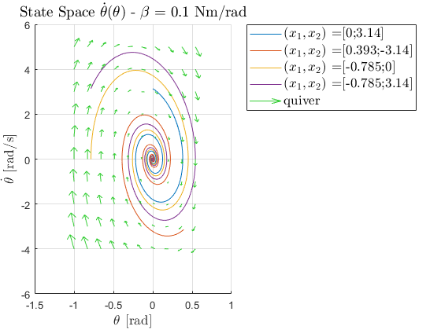
A imagem obtida corresponde a um "foco estável" em termos de retrato de fase do sistema. Tal é demonstrável através dos valores próprios. Estes são complexos conjugados com parte real negativa, o que indicia estabilidade assimptótica à semelhança do caso anterior. A presença de parte complexa vai induzir oscilação à semelhança do primeiro caso observado, sendo também algo comprovável atentando nos vectores próprios que são também complexos.
Pergunta 8 - Trajectórias rectilíneas no plano de fase.
Conforme foi referido anteriormente, pretende-se agora demonstrar a relação que os vectores próprios da matriz 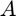 tem com as direções fundamentais em que o sistema evolui na segunda situação da pergunta anterior, isto é, . Por outras palavras, é útil recordar qual é a resposta do sistema em termos dos seus valores próprios (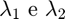), vectores próprios (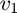 e 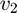), das condições iniciais, e na ausência de entrada:
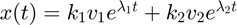, 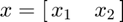
Em que 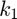 e 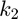 dependem das condições iniciais do sistema.
De acordo com esta expressão, é fácil perceber que as variáveis de estado evoluem segundo as duas direções definidas pelos vectores próprios. A rapidez com que evoluem é determinada pelos valores próprios. Como o sistema tende para zero com valores próprios negativos, ao definir a condição inicial sobre uma das rectas delineadas pelos dois vectores próprios fará com que a trajectória no plano de estado ocorra somente sobre estas até atingir o zero (equivalente a dizer que nesse caso, ou vai-se anular). O código seguinte começa por determinar os valores e vectores próprios da matriz , faz a simulação escolhendo as condições iniciais conforme as restrições explicadas anteriormente, e por fim, representa no plano de estado o output.
% eigenvalues and eigenvectors for fifferents for beta=1; s = friction(1,s); [V,D] = eig(s.sys.A, 'vector'); % As a result of both eigenvalues are negative the axes implode with a % rectilinear trajectory s.x0 = V(:,1); % eigenvector 1 l1 = ['$(x_1,x_2)$ =' mat2str(s.x0,3)]; % legend sig.y=sim('metron','StopTime', '5'); f = plotSS(sig.y,'State Space $\dot{\theta}(\theta)$ - $\beta$ = 1 Nm/rad'); s.x0 = V(:,2); % eigenvector 2 l2 = ['$(x_1,x_2)$ =' mat2str(s.x0,3)]; % legend sig.y=sim('metron','StopTime', '5'); plotSS(sig.y); fLegend({l1 l2},'bestoutside'); quiverSS(s.sys.A, f);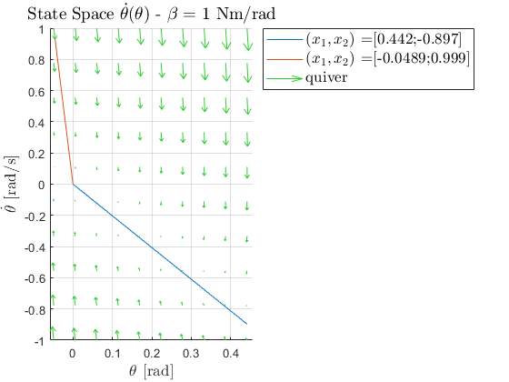
Pergunta 9 - Cálculo de comprimentos para uma dada cadência.
Conforme se pode observar, as trajectórias das variáveis de estado são rectilíneas, conforme seria de esperar. Nesta questão é proposto o dimensionamento da massa (posição na barra metálica e massa). Para a obtenção de ambos os parâmetros fixou-se dois andamentos comuns de modo a obter um valor de massa e distâncias diferentes que fizessem o sistema oscilar para as velocidades fixadas. O dimensionamento da massa encontra-se na função fromBPM().
Primeiramente é construída duas matrizes correspondentes às combinações possíveis de 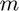 e 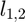 tendo em conta que 0≤l≤L=0.25 m e massa entre 0 e 500g, com um intervalo correspondente a um milímetro e uma grama respetivamente. Seguidamente
é calculado a frequência de oscilação natural do sistema
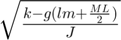,
e como o coeficiente de atrito () não é nulo, o sistema torna-se oscilatório logo o cálculo da frequência de amortecimento relaciona-se com a frequência de oscilação, sendo
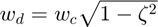, sendo ambas as frequências reais.
No gráfico seguinte está representado o número de batimentos por minuto que o sistema linear em estudo realiza para diferentes combinações de distâncias e massas.
bpm_w = [52 142]; % Adagio[55-65] Vivace[140-159] t = {'Variation of the frequency of oscillation with the','distance from the mass to the center and its mass.'}; [l_ls,m] = fromBPM(bpm_w,t); % get length and mass for each bpm wanted
[GOAL] BPM: 52 142 [GOAL] natural frequency: 2.7227 7.4351 [COMPUTED] damping frequency: 2.7234 7.4343 [COMPUTED] differences: 0.00067662 0.00077805 [COMPUTED] length - l: 0.214 0.088 [COMPUTED] mass - m: 0.087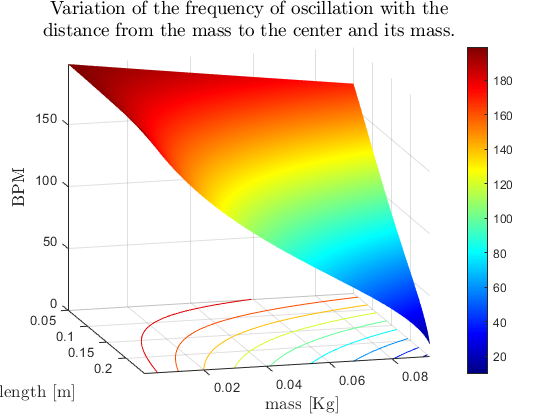 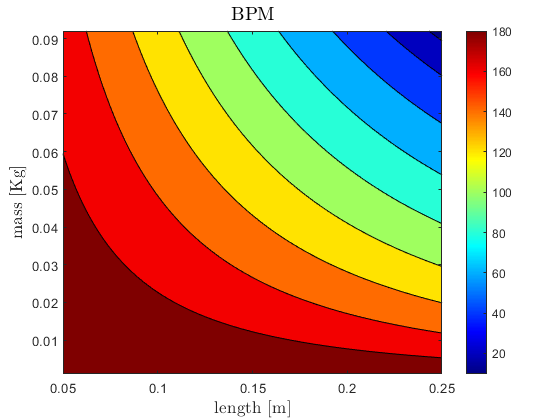
O valor BPM foi convertido para frequência em unidades SI, sendo ciclo completo é composto por dois batimentos demorando um segundo, assim a frequência de oscilação relaciona-se com o número de batimentos por minuto da seguinte forma:
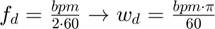.
Finalmente é calculada uma matriz de diferenças para ambas os BPMs e frequência de amortecimento, possibilitando assim obter a massa que provoca a menor diferença total. Posteriormente é obtida a distância que provoca uma menor diferença para a velocidade de oscilação pretendida.
c.schematic = 2; c.torque = 0; s = set_system9(l_ls(1),m); y=sim('metron','StopTime','15'); % quarter of a minute getBPM(y,s,'Linear System - BPM = ','theoretical analysis'); s = set_system9(l_ls(2),m); y=sim('metron','StopTime','15'); % quarter of a minute getBPM(y,s,'Linear System - BPM = ','theoretical analysis');
[COMPUTED] BPM: 52.0382 [COMPUTED] BPM: 142.0118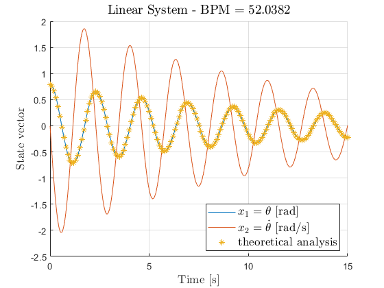 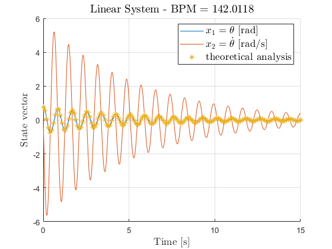
O resultado teórico encontra-se representado no gráfico com ‘*’. Tratando-se de uma aproximação linear do sistema, a andamento temporal da posição angular ($) coincide perfeitamente com a envolvente teórica. Numa comparação direta entre ambas as cadências, pode-se confirmar que a relação entre frequências coincide com a esperada e que frequências maiores traduzem amplitudes na velocidade de oscilação maiores. A projeção da representação do andamento temporal encontra-se na função getBPM(), que retorna os batimentos por minuto do resultado de uma simulação. O resultado obtido encontra-se muito próximo do esperado, o que comprava que o dimensionamento é válido.
Pergunta 10 - Sistema não linear e correção do comprimento.
Nesta questão é proposto simular o comportamento do metrónomo regido pelo sistema não linear inicialmente obtido. A massa do sistema foi dimensionada com os parâmetros calculados para o sistema linear.
c.schematic = 3; s = set_system9(l_ls(1),m); sig.y=sim('metron','StopTime','15'); % quarter of a minute getBPM(sig.y,s,'NonLinear System and no external torque - BPM = '); s = set_system9(l_ls(2),m); sig.y=sim('metron','StopTime','15'); % quarter of a minute getBPM(sig.y,s,'NonLinear System and no exeternal torque- BPM = ');
[COMPUTED] BPM: 56.5593 [COMPUTED] BPM: 143.1767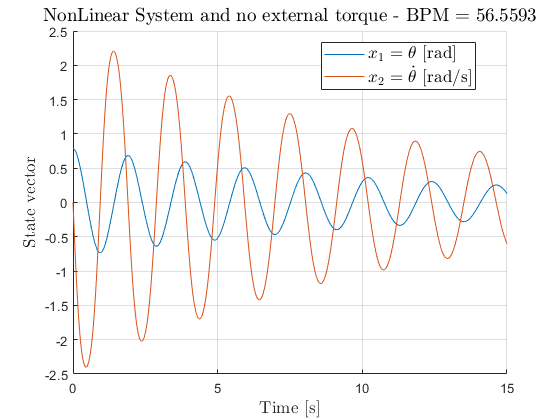 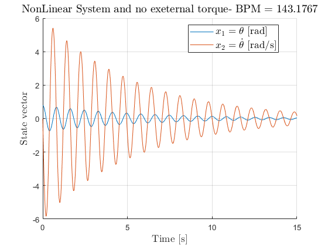
A simulação do sistema não linear foi controlada através do esquema 3 (c.schematic) e sem torque externo aplicado. O resultado do número de batimentos por minuto obtido difere do valor esperado, podendo ser essa diferença explicada devido à aproximação do sistema linear. Durante a linearização do sistema foi previsto um comportamento em torno do ponto de equilíbrio ( = 0), porém, quando simulado a posição inicial foi 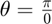 o que explica uma maior velocidade obtida, fruto do sistema compensar rapidamente o desvio de posição.
Para anular os desvios obtidos, é proposto o algoritmo da função ‘lgetNLS, que visa obter novos valores de l com recursos a múltiplas simulações. Logicamente quanto mais perto a massa se encontra do centro, o momento de inércia do braço do metrónomo é menor e, portanto, a sua velocidade aumenta. O algoritmo começa por comparar o valor de BPM proposto com o obtido da simulação do sistema não linear, de modo a poder estimar se é necessário um aumento da distância do centro à massa ou não. De seguida o algoritmo testa os novos valores de distância propostos e compara com o valor de BPM a obter. Caso o valor simulado difira do obtido o algoritmo recalcula um novo valor de distância com base dos valores testados anteriormente. O algoritmo propõem-se a convergir para o valor de BPM esperado, e portanto, não precisa de testar todos os pontos inicialmente previstos (quando encontra o valor esperado) nem distâncias para as quais já sabe que o valor a obter não corresponda com o esperado. Por fim a função retorna os novos valores de distância da massa ao centro que fazem com que o andamento do sistema não linear seja o esperado.
c.schematic = 3; l_nls = lgetNLS(bpm_w,l_ls,s,c); % Due to lower length, nonlinear system's frequency is higher s = set_system9(l_nls(1),m); sig.y=sim('metron','StopTime','15'); % quarter of a minute getBPM(sig.y,s,'NonLinear System and no external - BPM = ','theoretical analysis'); s = set_system9(l_nls(2),m); sig.y=sim('metron','StopTime','15'); % quarter of a minute getBPM(sig.y,s,'NonLinear System and no external - BPM = ','theoretical analysis');
[COMPUTED] BPM: 51.9931 [COMPUTED] BPM: 141.9069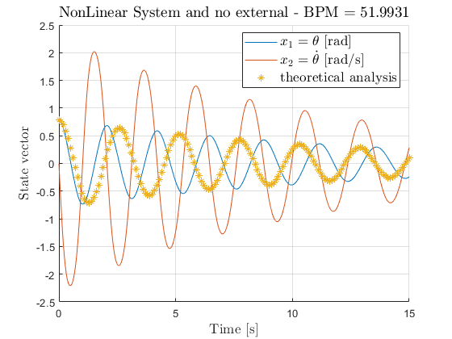 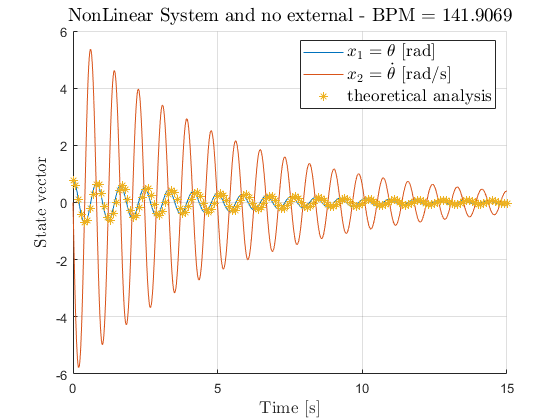
Por observação dos gráficos obtidos confirma-se que o andamento coincide com o esperado (idêntico à simulação do sistema linear) Quando sobreposto com o andamento temporal (teórico) do sistema linear confirma-se o que foi anteriormente mencionado, visto que quanto mais perto a massa se encontra do centro menor é o seu momento de inércia e portanto o sistema oscila com maior frequência.
Para o sistema não linear com torque externo aplico como forma de impulsos nas regiões para 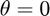, o sistema apresentou frequências de oscilação diferentes das propostas iniciais, e portanto recalculou-se as distâncias do centro até à massa que permitissem minimizar o erro.
Pergunta 11 - Introdução de impulsos para contrariar o decaimento natural para zero.
Nesta alínea, implementa-se precisamente o que foi sugerido, isto é, a introdução de impulsos tendo em vista a eliminação do decaimento para zero da amplitude de oscilação. Isto é conseguido através do terceiro ramo no diagrama de Simulink. Estes impulsos são inseridos quando é detetada uma passagem num intervalo próximo da posição zero de através de um bloco "Interval Test". O intervalo é definido pela variável c.torquelimit. O sinal da amplitude depende da velocidade, devendo ser positiva para velocidade positiva e negativa para velocidade negativa. O valor em módulo da amplitude aumenta com o valor de para precisamente contrariar eficazmente o seu efeito.
O código faz precisamente a simulação deste novo ramo e produz a variação no tempo das variáveis de estado e ainda conta os BPM para averiguar alterações.
c.schematic = 3; c.torque = 1; % Due to external torque aplication, velocity in theta arround 0 increases, % so BPM will also increases s = set_system9(l_nls(1),m); sig.y=sim('metron','StopTime','30'); % quarter of a minute getBPM(sig.y,s,'Torque (impulses) $|\theta|$ \textless 1 rad - BPM = '); s = set_system9(l_nls(2),m); sig.y=sim('metron','StopTime','30'); % quarter of a minute getBPM(sig.y,s,'Torque (impulses) $|\theta|$ \textless 1 rad - BPM = ');
[COMPUTED] BPM: 61.2691 [COMPUTED] BPM: 144.7777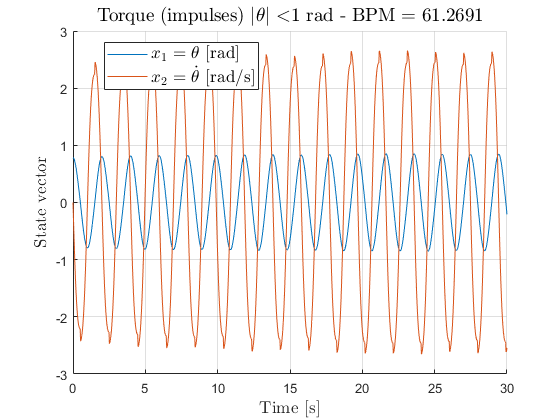 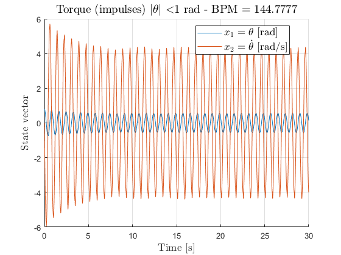
Podemos observar que efectivamente se elimina o decaimento para zero, porém, a frequência pretendida difere da pretendida. A pequena diferença surge precisamente da introdução do impulso que desiquilibra a frequência que a resposta tomaria naturalmente ao longo do tempo.
c.schematic = 3; c.torque = 1; l_nls = lgetNLS(bpm_w,l_ls,s,c); % Due to lower length, nonlinear system's frequency is higher s = set_system9(l_nls(1),m); y=sim('metron','StopTime','15'); % quarter of a minute getBPM(y,s,'Torque (impulses) $|\theta|$ \textless 1 rad - BPM = '); s = set_system9(l_nls(2),m); y=sim('metron','StopTime','15'); % quarter of a minute getBPM(y,s,'Torque (impulses) $|\theta|$ \textless 1 rad - BPM = ');
[COMPUTED] BPM: 52.0382 [COMPUTED] BPM: 141.0727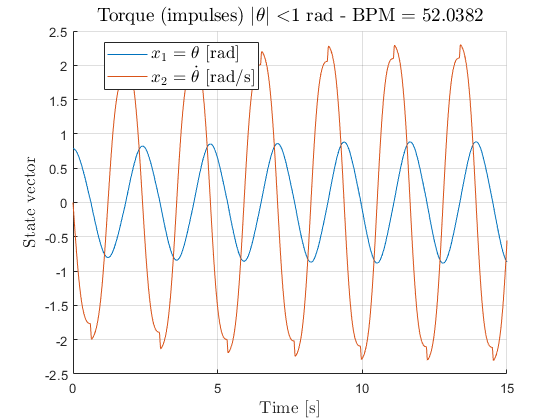 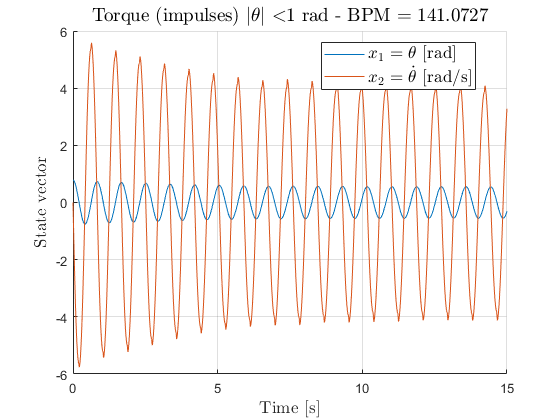
Pergunta 12 - Curvas de resposta em frequência
A partir do sistema linear sob o qual tem sido efectuado parte deste trabalho, foca-se agora a atenção em determinar a sua resposta em frequência, olhando para o mesmo como um sistema cuja entrada é o binário externo e a saída é posição angular. O código faz chamada da função multiBodes que produz precisamente o gráfico pretendido.
multiBodes(l_ls,m,'Bode Diagram - Linear System');
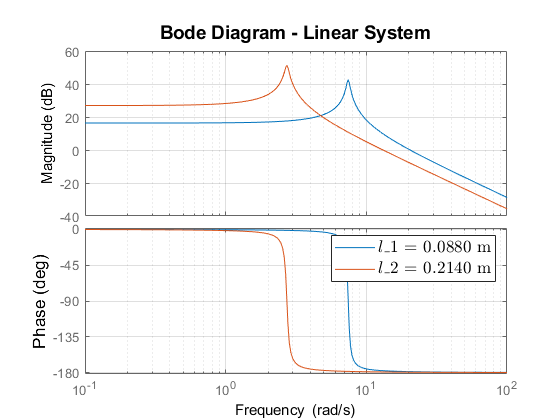 O resultado não é surpreedente e assemelha-se à resposta típica de um sistema de 2ª ordem. A diferença mais notável é o deslocamento do pico de ressonância para frequências maiores para o valor mais baixo da posição da massa. Isto é compatível com o raciocínio de que neste caso o sistema está mais apto para altas vibrações (mais BPM) do que para posições maiores; o que traduz-se na aptidão do sistema ter uma maior largura de banda para posições mais curtas da massa no ponteiro. A outra diferença reside no ganho para baixas frequências, que é maior para o caso em que o comprimento é igualmente maior. Uma possível explicação reside no facto de que para este caso, a amplitude de abertura é naturalmente maior dado o torque gravitacional ter um peso importante. Um dispositivo que pode ser utilizado para introduzir entradas sinusóidais (tendo em vista a obtenção do diagrama de Bode por exemplo) é um motor capaz de produzir torque com tais formas de onda.
Pergunta 13 - Medição de uma massa a partir da sua posição e dada uma entrada sinusoidal no sistema.
Para procedermos à medição da massa, faz-se uso da propriedade da resposta de um SLIT a uma onda de entrada sinusóidal. Como a saída será sinusóidal também, faz-se uso da amplitude de saída para calcular os parâmetros da função de transferência que são definidos pelo valor da massa. Desconhecendo o valor da amplitude de entrada e o valor da massa, bastará simular a resposta para duas frequências diferentes por modo a determinar o valor das incógnitas.
Especificando, o sistema é o seguinte, em que se denota a amplitude de entrada por 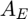 e a de saída por :

é o valor do módulo que a função de transferência toma para a frequência .
Feitas as simulações, recorre-se à função solve para extrair as soluções. O código que concretiza estes cálculos está abaixo.
s = set_system9(l_ls(1),m); mass = get_m_fromSimulation(s,c); disp(['[COMPUTED] mass: ' mat2str(round(mass,4)) ' Kg']); s = set_system9(l_ls(2),m); mass = get_m_fromSimulation(s,c); disp(['[COMPUTED] mass: ' mat2str(round(mass,4)) ' Kg']);
[COMPUTED] mass: 0.0871 Kg [COMPUTED] mass: 0.087 Kg
Os valores de massa obtidos estão muito próximos (ou até mesmo iguais) do valor usado para simulação, isto é, o valor real da massa em questão.
Anexos
publishOptions.evalCode = false; % does not evaluate the code fLegend.html = publish('fLegend.m',publishOptions); friction.html = publish('friction.m',publishOptions); fromBPM.html = publish('fromBPM.m',publishOptions); get_m_fromSimulation.html = publish('get_m_fromSimulation.m',publishOptions); getBPM.html = publish('getBPM.m',publishOptions); lgetNLS.html = publish('lgetNLS.m',publishOptions); multiBodes.html = publish('multiBodes.m',publishOptions); plotSS.html = publish('plotSS.m',publishOptions); plotYY.html = publish('plotYY.m',publishOptions); quiverSS.html = publish('quiverSS.m',publishOptions); set_controller.html = publish('set_controller.m',publishOptions); set_system5.html = publish('set_system5.m',publishOptions); set_system9.html = publish('set_system9.m',publishOptions); get_m_limit.html = publish('get_m_limit.m',publishOptions);
fLegend Formats legend.
friction Changes friction.
fromBPM Computes fixed m and l1,2 from specific BPM.
get_m_fromSimulation Computes m used suring simulation.
getBPM Computes simlation's BPM.
lgetNLS Calculates the length of the nonlinear system simulation response from a specific BPM.
multiBodes Overlaps multiple goat diagrams.
plotSS Plots Steady-Space: y2(y1).
plotYY Plots Time Response: y1(t) and y2(t).
quiverSS Draws a velocity plot.
set_controller Declares controller struct.
set_system5 Declares system struct with question 5 values.
set_system9 Declares system struct with question 9 values.
get_m_limit Detects the maximum limit for m such that the system is still stable.
close all
close_system